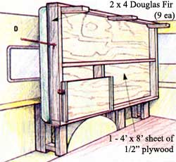
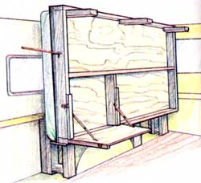
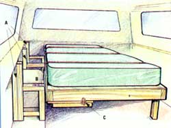

E.J. Bess's ingenious convertible pickup truck.
Use ¼” lag bolts with corresponding washers to join all 2 x 4s.
Nail plywood to 2 x 4 frame with 40 common 1½ " nails.
A. Lag bolt (we suggest galvanized hot dip bolts all around) to truck bed from the outside using fender washers on all three legs. B. Three snap hinges (one on each post) will keep the bed folding smoothly.
C. Two snap catches should be used (one on each side of the table). D. Hook and eye attachment to camper is a critical area. It must be reinforced to reduce the risk of damage to the camper side.
My living quarters consist of a bed that can be put up during the day and lowered at night for sleeping purposes. While the bed is in the up position, I have a foldable shelf under the bed which can be used as an eating table or a simple shelf. You can install as many tables as you find convenient.
I wanted the bed large enough for comfort so I built it as wide as I could and still be able to pivot it up vertically above the wheel well.
The truck bed was in excellent condition, so I wanted to avoid drilling any unnecessary holes in the original metal when mounting the fold-up bed to the inside of the truck. Fortunately, I was able to use the existing holes to mount the support legs.
First, I measured the height above the wheel well to the top of the canopy to see how much space I had. That determined the width of the bed I could build. Then I determined how much headroom I needed at the head of the bed to keep the blankets and bedding away from the front window because of condensation and moisture.
When I started building the actual bed, I made a 2 x 4 frame as a perimeter for the bed. I put plywood on the top of the frame and two legs on the outer edge of the bed (opposite the hinges) for support when the bed was down.
After building the bed and the table area, I added my twin size mattress and took plenty of warm bedding along.
I now have my home away from home that is convenient and easy to set up.
Have you been thunderstruck by a wood-shop idea that is just begging for an audience? Don't he bashful... write us at MOTHER'S Woodshop, c/o Mother Earth News, P. 0. Box 129, Arden, NC 28704. Include (1) as detailed a drawing of the project as you can, (2) a photo or photos of both yourself and the completed project so that we can make you famous, and, finally, (3) your home phone number.
|
 WILL SHELTON |
 WILL SHELTON |
 WILL SHELTON |